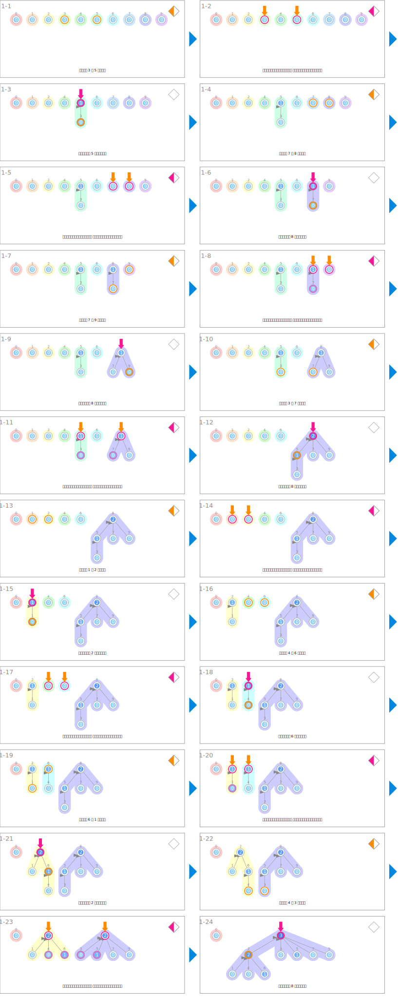

シンボル
| データ | ||
|---|---|---|
| 秩 | rank | |
| 合併集合 | ||
|---|---|---|
 | 尋找被指定的 2 個節點的根節點（代表）。 | root1 ← findSet(x) root2 ← findSet(y) |
 | 指向要合併的根節點（代表）。 | root1, root2 |
 | 比較根節點的秩。 | if rank[x] > rank[y]: |
 | 指向被選中的新的根節點（代表）。 | x 或 y |
| 將秩加 1。 | rank[y]++ | |
 | 改寫父節點。 | parent[?] ← ? |
| 壓縮路徑。 | parent[x] ← findSet(parent[x]): | |
アニメーション
合併集合
